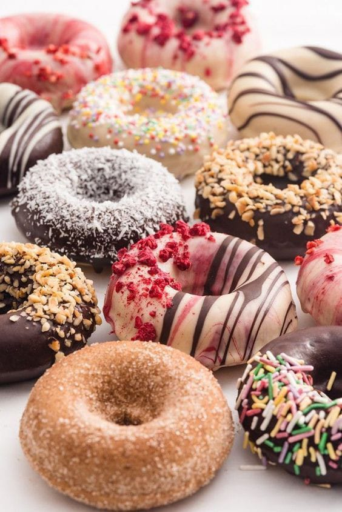

Cara membuat:
langkah pertama Campur semua bahan kering, lalu aduk rata.
Lalu Masukkan kuning telur, tuang susu cair. Uleni hingga rata.
Lalu tambahkan mentega, uleni hingga kalis.
Kemudian Diamkan selama kurang lebih 30 menit (hingga mengembang 2 kali lipatnya), buang gas dalam adonan.
Lalu Pipihkan adonan hingga setebal 1 cm.
Lalu Cetak adonan sesuai selera.
Kembangkan kembali selama kurang lebih 20 menit.
Kemudian Panaskan minyak,
goreng adonan Donat Kentang hingga kuning kecoklatan, lalu angkat tiriskan.
Donat Kentang siap dihias dan disajikan.

Kelebihan:
Kami memiliki kelebihan dalam produk yg kami buat, berikut kelebihan2 produk kami:
a.Memiliki variasi menu yang memanjakan pelanggan.
b.Menggunakan bahan-bahan yang alami.
c. Kebersihan dan kenyamanan yang djamin.
d. Memiliki koki berpengalaman baik seperti tamatan tata boga.
e. Harga lebih murah dibandingkan dengan produk sejenis dari kue donat yang sudah terkenal.
f. Makanan yang bercita rasa tinggi, menggugah selera dan pelayanan terbaik.
g.Terletak dikawasan elit mahasiswa, orang tua dan anak-anak.